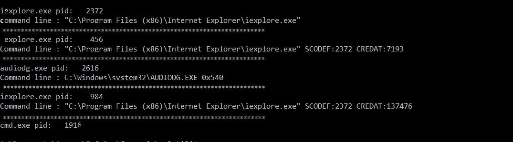
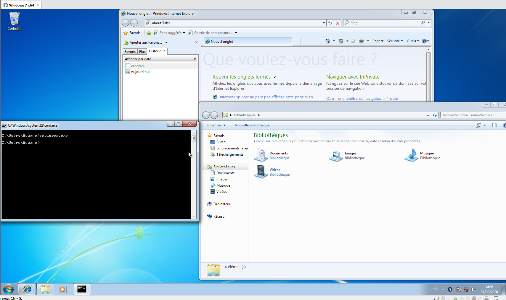
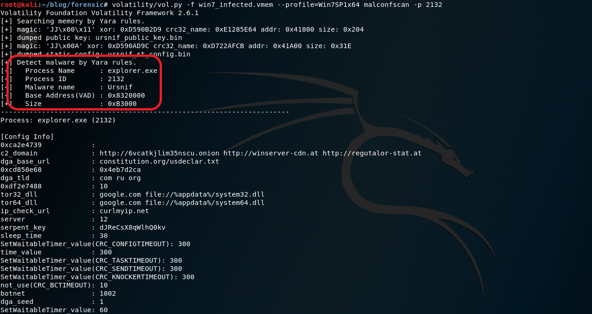

Introduction à l'analyse forensic avec Volatility
Aujourd'hui je vous propose une introduction à l'analyse forensic d'une capture de mémoire vive d'une machine virtuelle infectée par le malware Ursnif.

Avant d'injecter le malware Ursnif, nous allons en premier regarder les bases de volatility. Il faut suspendre la VM qui vient d'être configurée et récupérer le .vmem
contenue dans les dossiers de la machine ci-dessous .
Un .vmem est un fichier que créé VMware permettant de capturer la mémoire vive lorsque l'on suspends la machine nous donnant plus facilement la possibilité
d'analyser celle-ci.
Volatility est avant tout un outil d’analyse inforensique permettant de parcourir la mémoire volatile (la RAM) à la recherche de traces illégitimes
Son fonctionnement très simple nous permet une prise en main assez rapide, sans oublier qu'il peut être utilisé aussi bien en l'important
dans votre programme Python ou en ligne de commande. Pour notre utilisation, nous choisissons la ligne de commande qui est bien plus simple.
La structure est toujours la même :
-f : le chemin de votre dump
puis en suite le plugin utilisé

Le plugin imageinfo nous permet d'avoir les informations importantes sur le dump mémoire.
On remarque donc que volatility nous suggère plusieurs profiles, Win7SP1x64, Win7SP0x64 ... si on ne connaît pas exactement la version du système d’exploitation ,
il est recommandé de prendre le premier profile proposé
.
Un autre plugin, qui peut être lui aussi très utile est le plugin hashdump, il permet de récupérer le hash des utilisateurs.
Cet exemple nous montre la facilité d'utilisation de volatility. Pour information le hash équivaut à "password".
Un autre plugin lui aussi très important dans l'analyse d'un dump est cmdline, il permet de lister toutes les commandes en cours lors du dump.
Ahh nous trouvons l'explorer windows.
On remarque aussi que Internet Explorer et le CMD étaient aussi ouverts lors du dump.
Et oui ! Internet Explorer, L'explorer windows et le CMD. Tout y est !
Voilà la fin de cette petite introduction à volatility.
Retrouver les traces d'un malware ( Ursnif )
Maintenant passons aux choses sérieuses,
Il a donc fallu exécuter Ursnif dans la VM windows 7.
( l'échantillon d'ursnif est disponible en téléchargement ici, merci à aaSSfxxx ).
Puis en suite redémarrer celle-ci pour s'assurer qu'Ursnif s'était bien injecté
Pour commencer une analyse, l'utilisation du plugin netscan est très intéressante, en effet il permet de lister toutes les connexions
TCP/UDP en cours lors de la capture de la mémoire vive.
Le résultat de cette commande nous permet de remarquer plusieurs connexions suspectes effectuées par l'explorer.exe vers des IP curieux et sur des ports eux aussi surpenant.
Pour continuer l'analyse l'utilisation du plugin pslist est essentiel.
On peut voir ici tous les processus qui
étaient démarré lors de la capture
de la mémoire ram. Pour analyser chaque processus un plugin nommé MalConfScan
existe. Il permet d'extraire la configuration d'un malware si celui-ci est connue. Son installation es très simple :
pip install -r MalConfScan/requirements.txt
cd MalConfScan
cp -R malconfscan.py utils yara [DossierDeVotre Volatility]/volatility/plugin/malware
Voilà un script écrit en Python permettant de scanner chaque processus en utilisant le plugin MalConfScan :
import re
import sys
profile = '--profile=Win7SP1x64'
dumpfile = 'win7_infected.vmem'
process_pslist = subprocess.Popen(['volatility/vol.py', '-f', dumpfile, profile, 'pslist'], stdout=subprocess.PIPE)
pslist = process_pslist.communicate()[0]
list_pid = re.findall(r"0x[a-f0-9]+\s[a-zA-Z0-9\.]+\s+([0-9]+)", pslist)
for pid in list_pid:
process_malconscan = subprocess.Popen(['volatility/vol.py', '-f', dumpfile, profile, 'malconfscan', '-p', pid], stdout=subprocess.PIPE)
if 'Malware name' in process_malconscan.communicate()[0]:
print('Malware found, pid : ', pid)
En analysant se code, on arrive à comprendre comment utiliser le plugin MalConfScan :
Il fonctionne comme la plupart des plugins, en spécifiant son nom puis en passant en paramètre le pid attaché au processus.
En suite , nous pouvons faire usage du script exposé ci-dessous afin d’analyser tout les processus de la machine et peut être déterminer la présence du malware.
On peut donc voir que notre petit script a bien fonctionné et qu'il a détecté un processus infecté par un malware.
L'utilisation du plugin MalConfScan va encore nous être utile pour trouver de quel malware il s'agit.

Maintenant volatility nous affiche bien que le processus explorer.exe est infecté par le malware Ursnif dont le pid est 2132. Et l'on retrouve par
la même occasion toute la configuration
du malware. Magique ?
Si vous souhaitez récupérer un maximun d'informations sur un processus, un plugin nommé psinfo est disponible :
cd volatility/plugins/
wget https://raw.githubusercontent.com/monnappa22/Psinfo/master/psinfo.py
Puis utiliser la commande suivante :
Et l'on voit distinctement que le processus exécuté est encore une fois bien l'explorateur windows.
Une autre manière de récupérer son chemin est d'utiliser le plugin cmdline :
Etant donné que nous sommes en possession du PID attaché au processus malveillant d'Ursnif, il nous reste une dernière chose à effectuer pour en suite pouvoir analyser l'exécutable sans difficulté. Pour cela, le plugin procdump est disponible :
Et voilà, le processus infecté par Ursnif est dumper sur ma machine.
N'oubliez pas que si vous ne trouvez pas l'exploreur windows en tant que processus infecté cela est tout à fait normal. Ursnif
s'injecte
principalement dans Internet Explorer étant donné qu'une de ses fonctions est le vol bancaire. Pour ma part il s'est injecté dans l'explorer windows.
Voilà, mon premier article se termine. Je tiens à remercier aaSSfxxx pour l'échantillon utilisé lors de cette article
et aussi Unknow101 pour son soutient et bien sûr 0wne1s.
Vous pouvez télécharger cette échantillon ici (archive : ursnif_1002.zip, mot de passe :
infected et le sample
est 1002.bin). Et n'hésitez pas à aller voir ses articles sur l'analyse d'ursnif.
Sur ce, je vous souhaite une bonne journée et de chouettes analyses de vos dumps !